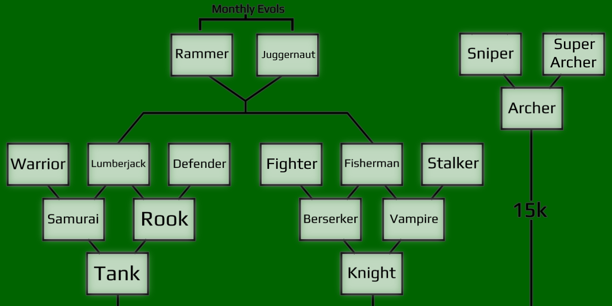
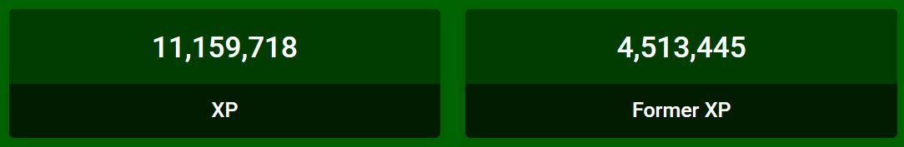

Join the Swordbattle.io Discord Server to find the changelog for older updates!
- 11 new evolutions! Includes a 3rd "secret" branch of evolutions separate from tank and berserker!
- 2 new chests: The White chest and Black chest!
- Monthly Evolutions! Every month or so, there will be new experimental evolutions to try!
- Leaderboard Update: Due to some problems with calculating coins to XP, we've updated all XP stats to be fully accurate!
- 20 new skins, a temporary skin sale, and a more polished shop!
- 2 new rock types, descriptions for evolutions, and other small bugfixes
11 new evolutions! Info is listed below, along with the new evolution tree!
- Warrior: Strong and great for combat. The ability is a mixture of the Tank and Samurai abilities, increasing the player size and speed at the same time!
- Lumberjack: Deals 3x more damage to chests and earns slightly more coins from them. Does less damage to mobs & bosses. Not a good evolution for fighting, but the ability can help with defending against players
- Defender: Doesn't do great damage, but has VERY high health, size, knockback and regen! The ability can knock any threats far, far away!
- Fighter: Great for fast-paced combat. High damage, high speed, and a short-lasting but short-cooldown ability that can be used to quickly get some hits on enemies.
- Fisherman: Thrown swords pull enemies towards you on hit! Using the ability will make MELEE attacks pull in enemies instead!
- Stalker: The same as before with its ability to go invisible, but it now has better stats and evolves from the Vampire!
- Rammer: One of the new monthly evolutions (talked about below). Thrown swords let the player unstoppably ram into anything, and one thrown sword can hit an enemy multiple times!
- Juggernaut: The only evolution to come without an ability, but has high damage, high attack speed, high size, high everything!
- Archer: Only appears after collecting 15k coins without evolving, and gives many buffs to throwing at the cost of low defense
- Sniper: Thrown swords travel faster and farther, and increases the range of sight for the player!
- Super Archer: Hitting players with thrown swords from farther away deals much more damage! The ability cancels all thrown swords and resets the throwing cooldown!
We're also adding a new system for evolutions shown in the image above: Monthly Evolutions! Every month or two we'll release 2 new monthly evols to be tested out. Some may even be fully added to the game! They're unlockable at 100k coins, but this value may be changed in the future.
For the last evolution news: All evolutions now have descriptions in-game, so everyone now knows what they do! (Also, you can click the text at the top that says "Evolutions" in-game to show/hide the evols!)
Besides evolutions, theres also 2 new chests that have been added, the White chest and Black chest! They're both better than Purple chests, with the White chest dropping 10k coins, and the Black chest basically being the White chest, except it drops a bit more coins and has a bit less health.
- We've added 20 more skins to the shop, with some of them being on sale (sale ends 7/25)! Besides that, all skins in the shop have realistic previews now!
- Also, you may have noticed event skins and special skins have disappeared from the shop. Do not worry, you still own all of those skins, and they will be coming back! We've just removed them temporarily to make the shop more organized and prepare for new types of cosmetics.
- The "Owned Skins" tab has also disappeared along with event & special skins, but the owned skins button can be toggled back on in settings!
- We've also added the mossy and lava rocks from all the way back in early 2024, and this will be accompanied by a small mob update soon
XP Leaderboard Update: This has been an issue since the release of Swordbattle V2 in 2023, but the XP leaderboard has been historically inaccurate due to a miscalculation from V1 to V2 (basically, all coins from V1 were divided by 50 to calculate XP, even though 1 XP is equal to only 20 coins). We've finally decided to fix this, so the XP leaderboard is now how it should be! We've still included "Former XP" on profiles for anyone majorly affected by this update, shown below:
This will most likely be the only significant update for July, but in August we plan to make new types of cosmetics (and a profile update), more integration for clans, and a new biome!